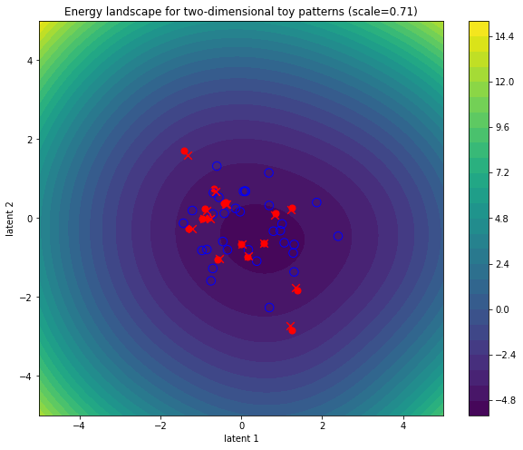
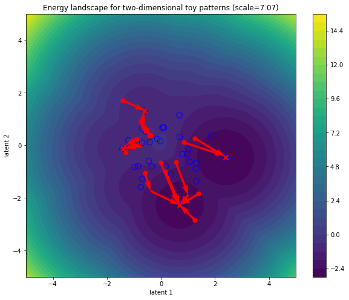
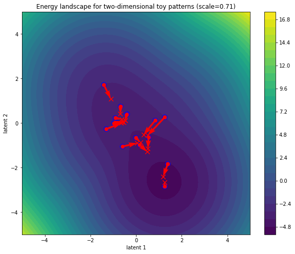

Attention as Energy Minimization: Visualizing Energy Landscapes

- Prelude: pattern terminology
- Attention modules
- From modern Hopfield networks to multi-head attention
- Attention in flatland: visualizing energy landscapes
- Conclusion
1. Introduction
📓 Colab notebook available here. Comments welcome.
Recent work 1 2 has shown that the softmax-attention update step in transformer models can be intepreted as a one-step gradient update or “inference” step of a judiciously chosen energy function. An overview of these ideas can be found in previous blog posts:
- An Energy-Based Perspective on Attention Mechanisms in Transformers
- Transformer Attention as an Implicit Mixture of Effective Energy-Based Models
The goal of this blog post is to explicitly show how vanilla softmax attention is related to energy minimization approaches and how the former can be substituted for the latter. For pedagogical purposes, we will focus purely on the attention operation. However, for transformer models to perform well in practice, it is necessary to wrap attention in residual connections and point-wise feedforward processing layers, see e.g. Attention is Not All You Need: Pure Attention Loses Rank Doubly Exponentially with Depth.
Summary:
- We provide a pedagogical energy-based attention module that stays as close as possible to vanilla softmax attention for ease of comparison.
- We walk through the correspondence between modern Hopfield networks and vanilla softmax attention by gradually adding complexity.
- We present visualizations of energy landscapes and trajectories associated to attention update steps for two-dimensional toy patterns.
Prelude: pattern terminology
Transformer literature almost exclusively talks about queries, keys, and values. For self-attention, these are all obtained from different linear transformations acting on the same set of input patterns. For cross-attention, only the queries derive from the input patterns; the keys and values are obtained from a different set of context patterns: think of a decoder architecture attending to encoded translations or the Perceiver model attending to multimodal input.
Hopfield networks literature starts from the idea of trying to implement an associative memory system for storing and retrieving patterns. Patterns stored in memory are called stored patterns. A state pattern is an input prompt for the associative memory system: what patterns stored in memory are closest to this particular prompt?
Depending on the context (heh), we can refer to input patterns as state patterns or queries and to context patterns as stored patterns or memory or keys.
Attention modules
Explicit vanilla softmax attention
To compare the behavior of explicit attention modules to that of energy-based attention modules, we need to first of all define a vanilla softmax attention module. The annotated implementation below features a bare_attn toggle in the forward pass for ease of comparison with the “bare” modern continuous Hopfield energy function we will discuss later on. The flag essentially disables all linear mappings so input and context patterns are processed “raw”.
class VanillaSoftmaxAttention(nn.Module):
"""Vanilla softmax attention.
Adapted from https://github.com/lucidrains/perceiver-pytorch (commit 37e2eb6).
"""
def __init__(
self, query_dim, context_dim=None, heads=1, dim_head=2, scale=None,
):
super().__init__()
# Inner dimension is expressed in terms of head count and dimensionality
# and thus decoupled from query_dim/context_dim (heads always "fit").
inner_dim = dim_head * heads
context_dim = context_dim if context_dim is not None else query_dim
# Linear transformations (queries, keys, values, head-mixing).
self.to_q = nn.Linear(query_dim, inner_dim, bias=False)
self.to_k = nn.Linear(context_dim, inner_dim, bias=False)
self.to_v = nn.Linear(context_dim, inner_dim, bias=False)
self.to_out = nn.Linear(inner_dim, query_dim)
self.heads = heads
self.scale = scale if scale is not None else dim_head ** -0.5
def forward(self, x, context=None, mask=None, scale=None, bare_attn=False):
# To facilitate comparison with modern Hopfield networks, setting `bare_attn`
# to `True` disables all linear mappings, assures there's only a single head and
# reduces the module to a barebone attention which takes in "raw" queries or state
# patterns and attends to a "raw" context/memory of stored patterns.
if bare_attn:
assert self.heads == 1, "only a single head when bare attention"
if context is not None:
assert (
x.shape[-1] == context.shape[-1]
), "query_dim/context_dim must match"
# Adaptive scale.
scale = scale if scale is not None else self.scale
# Take context either from elsewhere of from self (attention vs. self-attention).
context = context if context is not None else x
# Map x to queries and context to keys and values.
q = x if bare_attn else self.to_q(x)
k = context if bare_attn else self.to_k(context)
v = context if bare_attn else self.to_v(context)
# Split up latent dimension into subspaces for heads to act on.
# Head dimension becomes part of batch dimension (=> parallel processing of heads).
h = self.heads
q, k, v = map(lambda t: rearrange(t, "b n (h d) -> (b h) n d", h=h), (q, k, v))
# Scaled dot product of all queries against all keys (sum over `inner_dim`).
sim = einsum("b i d, b j d -> b i j", q, k) * scale
# Optional masking.
if mask is not None:
max_neg_value = -torch.finfo(sim.dtype).max
mask = repeat(mask, "b j -> (b h) () j", h=h)
sim.masked_fill_(~mask, max_neg_value)
# Softmax operation across "keys" sequence dimension.
attn = sim.softmax(dim=-1)
# Contract attention matrix with values.
out = einsum("b i j, b j d -> b i d", attn, v)
# Move head dimension out of batch again.
out = rearrange(out, "(b h) n d -> b n (h d)", h=h)
# Mix all the heads' outputs; stir well and serve immediately.
return out if bare_attn or h == 1 else self.to_out(out)
Implicit energy-based attention
Next, we define our energy-based attention module. Its forward pass will make use of the simple gradient descent function defined below to do energy minimization and update queries accordingly.
def minimize_energy(
energy_func,
queries,
keys,
mask=None,
step_size=1.0,
num_steps=1,
return_trajs=False,
):
"""Minimize energy function with respect to queries.
Keeps track of energies and trajectories for logging and plotting.
"""
out = defaultdict(list)
out["queries"].append(queries)
for _ in range(num_steps):
energies = energy_func(queries, keys, mask=mask)
grad_queries = torch.autograd.grad(
energies, queries, grad_outputs=torch.ones_like(energies),
)[0]
queries = queries - step_size * grad_queries
out["queries"].append(queries)
out["energies"].append(energies)
out["energies"].append(energy_func(queries, keys, mask=mask))
if return_trajs:
return out
return out["queries"][-1]
The EnergyBasedAttention module below has been structured to look as similar as possible to the the VanillaSoftmaxAttention module defined above. The main difference is the appearance of an energy function and the energy minimization call in the forward pass where the softmax attention used to be. Other differences include the absence of a linear map to “values” and masking being pushed into the energy function.
class EnergyBasedAttention(nn.Module):
def __init__(
self,
query_dim,
context_dim=None,
heads=1,
dim_head=2,
scale=None,
energy_func=None,
):
super().__init__()
inner_dim = dim_head * heads
context_dim = context_dim if context_dim is not None else query_dim
# Linear transformations (queries, keys, output).
self.to_q = nn.Linear(query_dim, inner_dim, bias=False)
self.to_k = nn.Linear(context_dim, inner_dim, bias=False)
self.to_out = nn.Linear(inner_dim, query_dim)
self.energy_func = energy_func if energy_func else hopfield_energy
self.heads = heads
self.scale = scale if scale is not None else dim_head ** -0.5
def forward(
self,
x,
context=None,
mask=None,
scale=None,
bare_attn=False,
step_size=1.0,
num_steps=1,
return_trajs=False,
):
# Bare checks.
if bare_attn:
assert self.heads == 1, "only a single head when bare attention"
if context is not None:
assert (
x.shape[-1] == context.shape[-1]
), "query_dim/context_dim must match"
scale = scale if scale is not None else self.scale
context = context if context is not None else x
q = x if bare_attn else self.to_q(x)
k = context if bare_attn else self.to_k(context)
h = self.heads
q, k = map(lambda t: rearrange(t, "b n (h d) -> (b h) n d", h=h), (q, k))
if mask is not None:
mask = repeat(mask, "b j -> (b h) () j", h=h)
# Minimize energy with respect to queries.
outputs = minimize_energy(
partial(self.energy_func, scale=scale),
q,
k,
mask=mask,
step_size=step_size,
num_steps=num_steps,
return_trajs=return_trajs,
)
if return_trajs:
return outputs
out = rearrange(outputs, "(b h) n d -> b n (h d)", h=h)
return out if bare_attn or h == 1 else self.to_out(out)
From modern Hopfield networks to multi-head attention
Let’s start with the simplest possible case: bare attention. We disable all linear mappings to queries/keys/values/output to make sure input and context patterns are processed “raw” and restrict ourselves to a single attention head. We numerically verify that a “bare” explicit attention module indeed returns the same result as doing a single, big step of energy minimization with respect to input state patterns. Put differently and more to the point, we merely show that automatic differentiation works.
Energy function
Consider the energy function of a modern continuous Hopfield network for a set of state patterns $\boldsymbol{\Xi}$ and stored patterns $\boldsymbol{X}$:
\begin{equation} E(\boldsymbol{\Xi}; \boldsymbol{X}) = \frac{1}{2} \boldsymbol{\Xi}^T \boldsymbol{\Xi} -\mathrm{logsumexp} \left( \boldsymbol{X}^T \boldsymbol{\Xi} \right),\label{eq:energy} \end{equation}
Think of this model as the scoring function of an associative memory system. For now, we’d like to keep the stored patterns fixed as memory slots and wiggle around the state patterns. We can translate this energy function into the following (batched) function:
def hopfield_energy(state_patterns, stored_patterns, scale, mask=None):
kinetic = 0.5 * einsum("b i d, b i d -> b i", state_patterns, state_patterns)
scaled_dot_product = scale * einsum(
"b i d, b j d -> b i j", state_patterns, stored_patterns
)
if mask is not None:
max_neg_value = -torch.finfo(scaled_dot_product.dtype).max
scaled_dot_product.masked_fill_(~mask, max_neg_value)
potential = -(1.0 / scale) * torch.logsumexp(scaled_dot_product, dim=2)
return kinetic + potential
Verifying the update rule
Let’s sample some state patterns and stored patterns and enable gradient tracking for the state patterns since we want to take derivatives with respect to these parameters later on.
latent_dim = 512
state_patterns = torch.randn(1, 8, latent_dim).requires_grad_(True)
stored_patterns = torch.randn(1, 32, latent_dim)
Cross-attention
First up is cross-attention. We feed state patterns as input and stored patterns as context into a vanilla softmax attention module.
softmax_attn = VanillaSoftmaxAttention(
latent_dim,
context_dim=latent_dim,
heads=1,
dim_head=latent_dim,
scale=latent_dim ** -0.5,
)
output_bare_softmax_attn = softmax_attn(
copy_tensor(state_patterns), context=copy_tensor(stored_patterns), bare_attn=True,
)
Now we do the same for an energy-based attention module and tell it to take a single, big gradient update step.
energy_attn = EnergyBasedAttention(
latent_dim,
context_dim=latent_dim,
heads=1,
dim_head=latent_dim,
scale=latent_dim ** -0.5,
energy_func=hopfield_energy,
)
output_bare_energy_attn = energy_attn(
copy_tensor(state_patterns),
context=copy_tensor(stored_patterns),
step_size=1.0,
num_steps=1,
bare_attn=True,
)
Now let’s compare the outputs of the two methods:
torch.allclose(output_bare_softmax_attn, output_bare_energy_attn, atol=1e-6)
True
Both tensors are approximately equal: bare softmax attention corresponds to taking a single gradient step of step_size=1.0 with respect to the state patterns using the energy function of modern Hopfield networks as a loss. For more details on this correspondence, we refer to a previous blog post.
Self-attention
Let’s do the same check for self-attention, which boils down to only inputting state patterns. Internally, the modules will consider the state patterns as stored patterns and effectively make the patterns pay attention to themselves.
output_bare_softmax_self_attn = softmax_attn(
copy_tensor(state_patterns), bare_attn=True
)
output_bare_energy_self_attn = energy_attn(
copy_tensor(state_patterns), step_size=1.0, num_steps=1, bare_attn=True,
)
print(
torch.allclose(
output_bare_softmax_self_attn, output_bare_energy_self_attn, atol=1e-6
)
)
print(
f"Norm between input state patterns and energy-minimized patterns: "
f"{torch.norm(state_patterns - output_bare_energy_self_attn)}"
)
True
Norm between input state patterns and energy-minimized patterns: 5.553587470785715e-06
The pattern update step looks almost like an an identity operation, which is to be expected for “bare” self-attention3. Without any linear transformations to map state patterns to queries and keys, every state pattern starts off already close to a local minimum since it coincides with itself as a stored pattern. The query starts off close to the key since the query-key mappings are identities. We will visualize this behavior in Section 4 for two-dimensional patterns.
Adding queries, keys, and values
Let’s now move closer to proper vanilla softmax attention by enabling linear transformations which map state patterns to queries and stored patterns to keys (and values). These parameters are able to move patterns around on the energy landscape before (queries, keys) and after (values) paying attention.
We recycle the previously instantiated patterns and modules and compare outputs again, making sure the parameters are equal and omitting the bare_attn flag:
output_softmax_attn = softmax_attn(
copy_tensor(state_patterns), context=copy_tensor(stored_patterns)
)
energy_attn.load_state_dict(softmax_attn.state_dict(), strict=False)
output_energy_attn = energy_attn(
copy_tensor(state_patterns),
context=copy_tensor(stored_patterns),
step_size=1.0,
num_steps=1,
)
torch.allclose(output_softmax_attn, output_energy_attn, atol=1e-6)
False
Why don’t the outputs match? We have to make sure we compare apples to apples and be mindful of the fact that the energy minimization step only knows about keys. Indeed, as shown previously in Hopfield Networks is All You Need, the one-step energy minimization, expressed in terms of queries and keys, effectively implements
\begin{equation} \boldsymbol{Q}^{\text{new}} = \text{softmax}\left( \frac{1}{\sqrt{d_k}} \boldsymbol{Q} \boldsymbol{K}^T \right) \boldsymbol{K} \end{equation}
instead of the vanilla softmax attention step
\begin{equation} \boldsymbol{Q}^{\text{new}} = \text{softmax}\left( \frac{1}{\sqrt{d_k}} \boldsymbol{Q} \boldsymbol{K}^T \right) \boldsymbol{V} \end{equation}
We can approximately undo this mapping to make a forced comparison for fixed parameters:
output_energy_attn_transformed = softmax_attn.to_v(
output_energy_attn @ torch.pinverse(energy_attn.to_k.weight.t())
)
torch.norm(output_softmax_attn - output_energy_attn_transformed)
tensor(0.0005, grad_fn=<CopyBackwards>)
Yet since all these parameters would be optimized in a real-world scenario, we should only care about whether the representational power of the modules is similar. To make the single-head energy-based attention module more expressive, we can always add an output layer, parametrized by weights $W_{O}$, to the module. As long as the composition of linear transformations $W_{K}W_{O}$ doesn’t collapse and its rank does not fall below that of the softmax attention’s $W_{V}$, things should be okay.
Adding masking and multiple attention heads
Finally, let us tie up some loose ends and complete the correspondence between vanilla softmax attention and energy-based minimization.
Masking
Since masking boils down to putting restrictions on what patterns in the inputs are allowed to talk to each other, it can just as well be done at the level of the energy function. By filling the tensor inside the logsumexp operator in hopfield_energy with $-\infty$ values at to-be-masked-out positions, we get the same effect as the masking operation in the forward pass of VanillaSoftmaxAttention. Boolean masks can be passed to the EnergyBasedAttention’s forward function and propagate to the energy function.
Multi-head attention
Up to now, we have only considered a single attention head. Essentially, multiple attention heads subdivide the latent space into equal parts and process these subproblems in parallel. The head dimension becomes part of the batch dimension. This translates to having parallel energy minimizations going on for different heads, each acting on their own subspace. Since our hopfield_energy function is already batched, we can use the same machinery of the previous sections, as shown below.
heads = 8
dim_head = latent_dim // heads
scale = dim_head ** -0.5
mha_energy_attn = EnergyBasedAttention(
latent_dim,
context_dim=latent_dim,
heads=heads,
dim_head=dim_head,
scale=scale,
energy_func=hopfield_energy,
)
mha_energy_attn(
copy_tensor(state_patterns),
context=copy_tensor(stored_patterns),
step_size=1.0,
num_steps=1,
)
tensor([[[-0.0514, -0.0353, 0.0243, ..., -0.0335, -0.0060, 0.0243],
[-0.1004, -0.0136, -0.0297, ..., 0.0079, 0.0083, 0.0336],
[-0.0507, -0.0369, -0.0219, ..., -0.0022, -0.0246, -0.0223],
...,
[-0.0388, -0.0217, -0.0470, ..., -0.0067, 0.0020, -0.0139],
[-0.0283, -0.0699, -0.0205, ..., -0.0261, -0.0667, 0.0052],
[-0.0262, -0.0360, -0.0139, ..., -0.0011, -0.0199, -0.0004]]],
grad_fn=<AddBackward0>)
It is hard to compare with the exact output of the equivalent VanillaSoftmaxAttention module for fixed module parameters. For multi-head attention, the updated queries coming out of the separate energy minimization steps will have summed over each heads' keys instead of its values. For a single attention head we could undo the keys' transformation by acting with the inverse of the keys' weights. For multiple attention heads, that is no longer possible.
Again, since all these parameters would be optimized in a real-world scenario, we should only care about whether the representational power of the modules is similar. One approach would be to add parameters inside the energy function that take care of mapping to “values” on the level of the heads.
Attention in flatland: visualizing energy landscapes
We now leave the world of high-dimensional latent spaces behind us and focus on the toy model scenario of just two latent space dimensions. We only consider a single attention head because having just two heads, each with dimension one, is just silly. For every two-dimensional token pattern vector, a third dimension will be provided by the value of the scalar energy function at that point.
Let’s sample some tiny toy patterns to play around with.
toy_state_patterns = torch.randn(1, 16, 2).requires_grad_(True)
toy_stored_patterns = torch.randn(1, 32, 2)
Bare cross-attention
Let’s plot our tiny toy patterns taking a big gradient step!
fig, ax = simulate_and_plot_patterns(
hopfield_energy,
copy_tensor(toy_state_patterns),
context=copy_tensor(toy_stored_patterns),
scale=2 ** -0.5,
step_size=1.0,
num_steps=1,
plot_title=f"Energy landscape for two-dimensional toy patterns",
)
In the figure above, the blue open circles correspond to the stored patterns (memory, context, keys, …), the red circles denote the initial state patterns (inputs, queries, probes, …) and the red crosses the updated queries obtained after n_steps of energy minimization. The red arrows denote the trajectory in the energy landscape.
We will now illustrate some example scenarios.
Small steps go nowhere
fig, ax = simulate_and_plot_patterns(
hopfield_energy,
copy_tensor(toy_state_patterns),
context=copy_tensor(toy_stored_patterns),
scale=2 ** -0.5,
step_size=0.1,
num_steps=1,
plot_title=f"Energy landscape for two-dimensional toy patterns",
)

Lots of (big) steps converge near (global) minimum or repeated softmax iterations make all token representations identical
fig, ax = simulate_and_plot_patterns(
hopfield_energy,
copy_tensor(toy_state_patterns),
context=copy_tensor(toy_stored_patterns),
scale=2 ** -0.5,
step_size=1.0,
num_steps=10,
plot_title=f"Energy landscape for two-dimensional toy patterns",
)
Decreasing the scale (increasing the temperature) makes the landscape smoother and encourages convergence to same (global) minimum
fig, ax = simulate_and_plot_patterns(
hopfield_energy,
copy_tensor(toy_state_patterns),
context=copy_tensor(toy_stored_patterns),
scale=0.1 * 2 ** -0.5,
step_size=1.0,
num_steps=1,
plot_title=f"Energy landscape for two-dimensional toy patterns",
)
Increasing the scale (lowering the temperature) creates “disconnected” valleys in the energy landscape inhabited by stored patterns which act as attractors for any query that happens to be in its basin of attraction
fig, ax = simulate_and_plot_patterns(
hopfield_energy,
copy_tensor(toy_state_patterns),
context=copy_tensor(toy_stored_patterns),
scale=10 * 2 ** -0.5,
step_size=1.0,
num_steps=5,
plot_title=f"Energy landscape for two-dimensional toy patterns",
)

Adding linear query-key-value transformations
# As commented on before, the value transformation is applied
# after the update step so that effectively the product
# W_K x W_V is applied to the updated state patterns.
to_q = nn.Linear(2, 2, bias=False)
to_k = nn.Linear(2, 2, bias=False)
to_v = nn.Linear(2, 2, bias=False)
fig, ax = simulate_and_plot_patterns(
hopfield_energy,
to_q(copy_tensor(toy_state_patterns)),
context=to_k(copy_tensor(toy_stored_patterns)),
scale=2 * 2 ** -0.5,
step_size=1.0,
num_steps=1,
values_post_processing_func=to_v,
plot_grid_size=2,
plot_title=f"Energy landscape for two-dimensional toy patterns",
)
The yellow arrows point from the final, energy-minimized, query updates to the “value-transformed” output queries, which are denoted with yellow crosses. Running this cell again in the colab notebook will give different landscapes and trajectories every time since the queries and keys depend on the random linear layers. The differences are more pronounced when increasing the scale (lowering the temperature).
Since the value transformation is done after the energy minimization, it can and does undo some of the influence of the keys' attractors, e.g. sending updated queries to “uphill” regions in the energy landscape defined at that that layer. This suggests that the value transformation should not be seen as part of the core attention mechanism but that its role is rather to learn during training how to best hop to different regions in preparation for whatever the next layer needs.
Bare self-attention: on the importance of scale and why multiple heads
Since all of the flatland examples so far have been for cross-attention, let’s also visualize a self-attention update below:
fig, ax = simulate_and_plot_patterns(
hopfield_energy,
copy_tensor(toy_state_patterns),
scale=2 ** -0.5,
step_size=1.0,
num_steps=1,
plot_title=f"Energy landscape for two-dimensional toy patterns",
)

Wait, what? Why did the updated state patterns move from their initialization? Didn’t we see before that the norm between inputs and outputs hardly changed at all for bare self-attention?
To look into this, let’s plot the norm between inputs and outputs in function of the latent dimension, while scaling the scale or inverse temperature relative to the transformer default $\beta = 1/\sqrt{\mathrm{d_k}}$. We sample toy patterns repeatedly for every dimension/scale combination to get an idea of the statistical behavior.
dims = np.linspace(2.0, 1024, num=100, dtype=np.int32)
beta_scales = np.linspace(0.2, 2.0, num=50, dtype=np.float32)
norms = np.zeros((len(beta_scales), len(dims)))
for i, dim in enumerate(dims):
bare_attention = VanillaSoftmaxAttention(dim, heads=1, dim_head=dim)
for j, beta_scale in enumerate(beta_scales):
inputs = torch.randn(1, 32, dim).requires_grad_(True)
outputs = bare_attention(inputs, bare_attn=True, scale=beta_scale * dim ** -0.5)
norms[j][i] = torch.norm(inputs - outputs)
# Suppresses a warning.
norms = np.ma.masked_where(norms <= 0, norms)
# Plot data.
fig = plt.figure(figsize=(10, 8))
ax = fig.gca()
X, Y = np.meshgrid(beta_scales, dims)
contourplot = ax.contourf(
dims,
beta_scales,
norms,
norm=colors.LogNorm(vmin=1e-5, vmax=1e2),
levels=np.logspace(-8, 2, 10),
)
ax.set_xlabel("d_k")
ax.set_ylabel("scale / sqrt(d_k)")
plt.colorbar(contourplot, format="%.e", ticks=ticker.LogLocator(base=10))
ax.axvline(x=2, color="r")
ax.axvline(x=512, color="r")
transformer_default_scale = ax.axhline(y=1.0, color="r")
In this contour plot, we plot the norm differences between inputs and outputs of a bare self-attention step for a sweep across latent dimensions and inverse temperature scale factors. The horizontal red line corresponds to the scale factor used by default in most transformer implementations. Some comments:
- For a fixed latent dimension, we see that increasing the scale factor corresponds to smaller norm differences, i.e. more pronounced valleys where it’s much harder to get out of, especially if you start at the bottom and there is no query-key-value mapping taking you elsewhere.
- The vertical red line corresponds to the earlier bare self-attention result using a latent dimension of 512. The intersection point indeed corresponds a norm difference of the order we saw previously. The value for a latent dimension of 2 (left border of plot) suggests that patterns do move around quite a bit, confirming our visualization above.
- Setting the scale for bare multi-head attention proportionally to the (smaller) head dimension instead of the full latent dimension corresponds to moving leftwards along the horizontal red line. The norm difference increases so that, for bare multi-head self-attention, patterns in multiple small heads tend to bounce around more than they would in a single big head. This might be one of the reasons why multiple heads help with training transformers: since the effective temperature is lower in the smaller latent spaces, the topography of the lower-dimensional energy landscapes is more pronounced and individual heads can go explore a bit to find their niche valley.
Conclusion
Using the tools presented in this blog post, we have shown that it is possible to swap the explicit attention module in a transformer for an implicit energy minimization method. What happens when we start playing around with different energy functions? Can we make patterns interact? Can we make the energy minimization step more efficient by treating it as a fixed-point problem? It remains to be seen whether all of this is a useful thing to do.
References & footnotes
-
Hubert Ramsauer, Bernhard Schäfl, Johannes Lehner, Philipp Seidl, Michael Widrich, Lukas Gruber, Markus Holzleitner, Milena Pavlović, Geir Kjetil Sandve, Victor Greiff, David Kreil, Michael Kopp, Günter Klambauer, Johannes Brandstetter, and Sepp Hochreiter, Hopfield Networks is All You Need (2020) ↩︎
-
Dmitry Krotov and John Hopfield, Large Associative Memory Problem in Neurobiology and Machine Learning (2020) ↩︎
-
Caveat: For the special case of bare energy-based self-attention, state patterns actually appear quadratically in the argument of the
logsumexppart of the energy function. Taking the derivative usingminimize_energy(..)however assumes the context is a different node in the computational graph, which, in this case, where we should be taking the derivative ofenergy(x, x)instead ofenergy(x, context), yields a gradient that misses a factor of 2. But ensuring the gradient is “correct” for this special case would of course screw up the cancellation of the state pattern with itself forstep_size=1.0andnum_steps=1so that the updated query would no longer match the output of bare vanilla softmax attention. Proper treatment of doing multiple steps of bare energy-based self-attention should also include manually setting the context to the updated queries (since the queries themselves change every update step). Luckily no one would seriously consider using bare energy-based self-attention. ↩︎
Matthias Bal
Machine learning engineer with a background in physics.